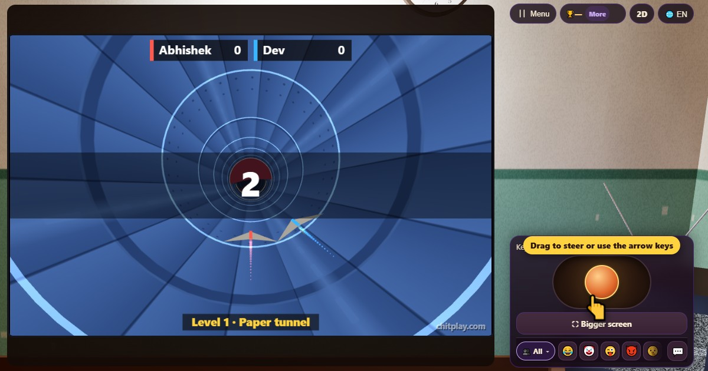

سرنگ ریس (Tunnel Race)
- 👥 1–4 کھلاڑی
- آرکیڈ گیمز (3D ٹی وی پر)
- 🆓
اردو گائیڈ
کاغذ کا جہاز نہ ختم ہونے والی سرنگ میں۔ دیواروں سے بچیں اور جواہر جمع کریں۔
English name: Tunnel Race

کیسے کھیلیں
- اسٹک کو بائیں یا دائیں گھسیٹیں، یا A اور D، ایرو کیز یا گیم پیڈ سے سرنگ کے اندر گول گھومیں۔
- سرخ دیوار سرنگ کا کچھ حصہ روکتی ہے: اس کے بغل سے جائیں۔ نارنجی دیوار ایک خلا چھوڑ کر سب بھر دیتی ہے: خلا میں سے نکلیں۔
- چمکتے جواہر جمع کریں، ہر ایک کے 10 پوائنٹس۔
- دیوار چھو گئی تو دوڑ ختم۔ جتنا آگے جائیں سرنگ اتنی تیز ہوتی ہے، اور ہر نئے لیول میں نئی قسم کی دیوار آتی ہے۔
پوائنٹس کیسے ملتے ہیں
جتنا اڑیں اتنے پوائنٹس، اور ہر جوہر کے 10۔ 50، 150، 300 اور 600 پوائنٹس پر میڈل۔
کون جیتتا ہے
اکیلے ہوں تو اپنا بہترین اسکور توڑیں۔ دوسروں کے ساتھ سب ایک ساتھ دوڑتے ہیں اور سب سے زیادہ اسکور جیتتا ہے۔
اکثر پوچھے جانے والے سوالات
کیا یہ مشکل ہے؟
نہیں۔ یہ آہستہ اور چوڑے خلا سے شروع ہوتا ہے اور تھوڑا تھوڑا تیز ہوتا ہے۔
کیا دوست بھی دوڑ سکتے ہیں؟
ہاں، ایک ہی سرنگ میں ایک ساتھ چار جہاز اڑ سکتے ہیں۔
کیسے کھیلیں
- مہمان کے طور پر: نہ رجسٹریشن نہ لاگ اِن۔ نام چنیں اور فوراً کھیلیں۔
- کمپیوٹر کے ساتھ: کوئی نہ ہو تو خالی جگہیں کمپیوٹر کھلاڑی بھر دیتے ہیں۔ آسان، نارمل یا مشکل۔
- آن لائن: دنیا بھر کے کھلاڑیوں والی کھلی میز پر بیٹھیں۔
- قریب کے دوستوں کے ساتھ: ایک فون پر گیم شروع کریں اور کوڈ یا QR کوڈ بھیجیں۔ دوست اپنے فون سے شامل ہو جاتے ہیں۔
- ایک فون پر: باری باری فون آگے بڑھائیں: پورے گھر کے لیے ایک فون کافی ہے۔
دوسری زبانیں
- हिन्दी: टनल रेस
- Hinglish: Tunnel Race
- Español: Tunnel Race
- Português: Tunnel Race
- Français: Tunnel Race
- Deutsch: Tunnel Race
- Bahasa Indonesia: Tunnel Race
- Türkçe: Tunnel Race
- Italiano: Tunnel Race
- 日本語: トンネルレース
- 한국어: 터널 레이스
- 中文: 隧道竞速
- Русский: Гонка в тоннеле
- नेपाली: सुरुङ दौड
- বাংলা: সুড়ঙ্গ রেস
- English: Tunnel Race · مکمل اصول (انگریزی)
تمام گیمز


ChitPlay میں اصلی پیسے، شرط یا انعام نہیں ہیں۔ پوائنٹس کی کوئی قیمت نہیں۔